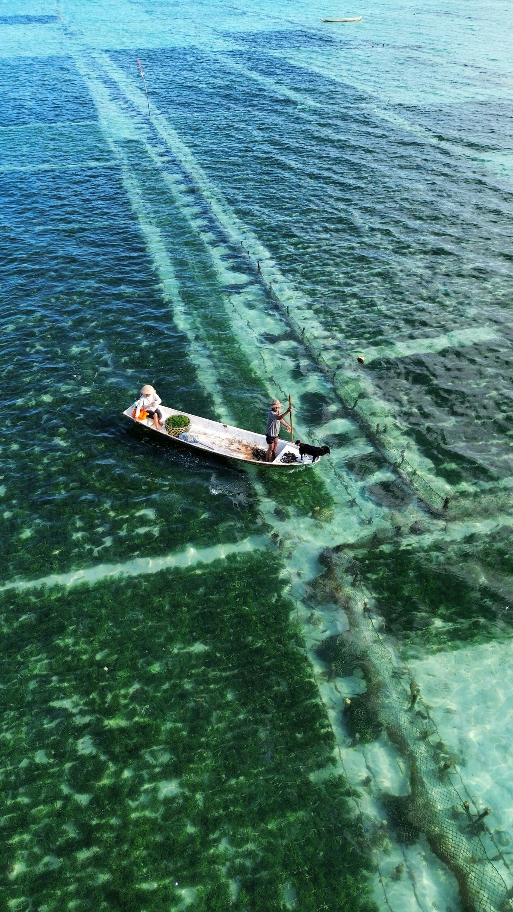
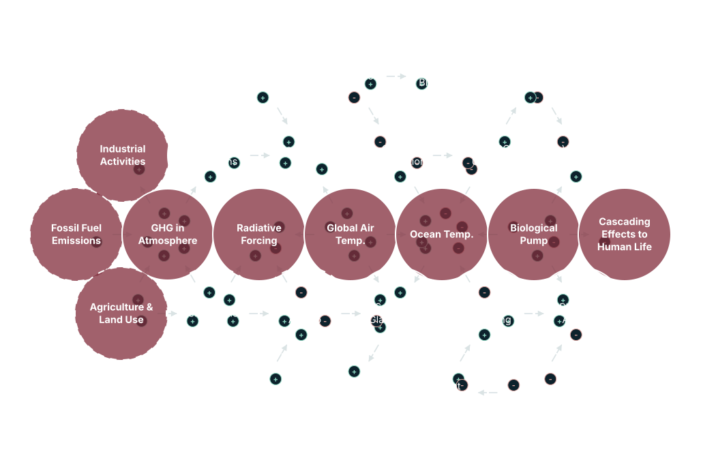

This system diagram maps the connections and flows between human activities, atmospheric and ocean warming, and its impacts on marine functions. Hover or tap any node for more detail. Switch views below to trace a specific process.

The primary causal chain, highlighted in red: human activity raises atmospheric GHGs, which drives radiative forcing and rising air and ocean temperatures, cascading into effects on human life.
Hover or tap a node for detail · switch tabs above to trace a different feedback loop
Altogether, poor ocean health disrupts ecosystems, harms the biosphere, and impacts human communities that depend on the ocean for food and livelihoods. It's important to realize those impacts are not distributed equally: the people most dependent on marine ecosystems, and those with the fewest resources to adapt, often face the greatest risks.
Warmer waters push fisheries to migrate and shrink aquaculture yields, reducing access to nutritious seafood.
Warmer oceans fuel more intense cyclones and tropical storms, driving coastal hazards, mortality and displacement.
Warmer waters expand the range of some pathogens and vectors, increasing exposure to certain diseases.
Loss of livelihoods, displacement and ecosystem degradation bring stress, anxiety and loss of community.